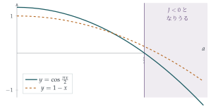

STEP III 2014、第4問
先に進む前に問題を読んでおこう。問題は STEP Support Programme の問題データベースにある： step.maths.org/questions/14-s3-q4
導入
学校で扱う最適化問題のほとんどは、最良の数を求めるものである。たとえば、面積を最大にする \(x\) の値を求める、といった問題である。これに対して変分法（calculus of variations）は、最良の関数を求める。2点を結ぶどの曲線に沿えば、ビーズは最も速く滑り落ちるか。吊るした鎖はどのような形になるか。光はレンズの中をどの経路で進むか。いずれの場合も、最適化すべき量は積分であり、未知のものは関数全体である。
この問題では、興味深い例のうち最も単純なものを調べる。積分 \(J = \int_0^1 \bigl((y')^2 - a^2y^2\bigr)\,\mathrm{d}x\) では、二つの項がせめぎ合っている。傾きの大きさは値を押し上げ、関数の大きさは値を押し下げる。\(a\) が小さければ常に傾きの項が勝ち、どの関数に対しても \(J \geq 0\) となる。しかし、このつり合いが崩れる臨界値が \(a\) には存在し、問題はそれを正確に求める。それは \(a = \frac\pi2\) である。この \(\pi\) がどこから来るのかが、この節の主題となる。
取りかかる前に
\(I \geq 0\) が自明でないのはなぜか。\(y(1) = 0\) を満たす \(y = 1 - x\) で試してみよ。
\(I\) は二つの正の量の差なので、正にも負にもなりうる。\(y = 1 - x\) の場合、\(\int_0^1 1\,\mathrm{d}x = 1\) かつ \(\int_0^1 (1-x)^2\,\mathrm{d}x = \frac13\) なので、\(I = \frac23 > 0\) である。しかし、もっと巧妙な関数を選べば、\(\int (y')^2\) に比べて \(\int y^2\) を大きくできるかもしれない。この問題の工夫は、\(I\) を平方の積分として表すことにある。平方の積分は明らかに非負である。これは積分における「平方完成」（completing the square）である。
順を追って解く
段階 1 平方完成
\(I_1\) の中の平方を展開すると \[I_1 = \int_0^1 \bigl((y')^2 + 2yy'\tan x + y^2\tan^2 x\bigr)\,\mathrm{d}x,\] となるので \[I - I_1 = -\int_0^1 \bigl(y^2 + y^2\tan^2 x + 2yy'\tan x\bigr)\,\mathrm{d}x = -\int_0^1 \bigl(y^2\sec^2 x + 2yy'\tan x\bigr)\,\mathrm{d}x.\]
被積分関数 \(y^2\sec^2 x + 2yy'\tan x\) はある関数の導関数そのものである。何の導関数か。
積の微分法則により \(\dfrac{\mathrm{d}}{\mathrm{d}x}\bigl(y^2\tan x\bigr) = 2yy'\tan x + y^2\sec^2 x\) である。よって \[I - I_1 = -\Bigl[y^2\tan x\Bigr]_0^1 = -\bigl(y(1)^2\tan 1 - y(0)^2\tan 0\bigr) = 0,\] となる。ここで \(y(1) = 0\) かつ \(\tan 0 = 0\) を用いた。したがって、平方の積分であることから \(I = I_1 \geq 0\) である。■
段階 2 \(I = 0\) となるのはいつか
連続で非負の関数の積分が \(0\) であるとき、その関数について何がいえるか。それでは、\(I = 0\) のとき \(y\) はどのような方程式を満たさなければならないか。
積分が \(0\) である連続な非負関数は恒等的に \(0\) でなければならない（もしある点で正なら、その点のまわりの小区間でも正となり、積分に正の寄与をするからである）。したがって、\(I = 0\) ならば \([0, 1]\) 上で \(y' + y\tan x = 0\) が成り立つ。\(\sec x\) を掛けると、これは \(\frac{\mathrm{d}}{\mathrm{d}x}\left(\frac{y}{\cos x}\right) = \frac{y'\cos x + y\sin x}{\cos^2 x} = 0\) を意味するので、\(y = C\cos x\) である。すると \(y(1) = C\cos 1 = 0\) であり、\(\cos 1 \neq 0\) より \(C = 0\) となる。したがって、\(I = 0\) となるのは \(y \equiv 0\) のときに限る。■
段階 3 一般の場合
\(\int_0^1 (y' + ay\tan bx)^2\,\mathrm{d}x\) を用いて段階 1 を繰り返せ。残りの項がある関数の導関数そのものになるためには、\(b\) はどうあるべきか。
この積分を \(K\) とおく。すると \[\begin{aligned} J - K &= -\int_0^1 \bigl(a^2y^2 + a^2y^2\tan^2 bx + 2ayy'\tan bx\bigr)\,\mathrm{d}x \\ &= -\int_0^1 \bigl(a^2y^2\sec^2 bx + 2ayy'\tan bx\bigr)\,\mathrm{d}x. \end{aligned}\] 一方、\(\frac{\mathrm{d}}{\mathrm{d}x}\bigl(ay^2\tan bx\bigr) = 2ayy'\tan bx + ab\,y^2\sec^2 bx\) である。これらがちょうど一致するのは \(ab = a^2\)、すなわち \(b = a\) のときである。このとき \[J - K = -\Bigl[ay^2\tan ax\Bigr]_0^1 = -a\,y(1)^2\tan a = 0,\] となるので、\(J = K \geq 0\) である。
この議論はどこで破綻しうるか。（区間 \(0 \leq x \leq 1\) における \(\tan ax\) に注目せよ。）
この議論では、\([0, 1]\) のすべての \(x\) に対して \(\tan ax\) が定義されていて連続であることが必要である。そうでなければ \(K\) が存在しないかもしれず、微分積分学の基本定理（fundamental theorem of calculus）を適用できない。\(x\) が \([0, 1]\) を動くとき \(ax\) は \([0, a]\) を動き、そこで \(\tan\) が連続であるのはちょうど \(a < \frac\pi2\) のときである。したがって、この証明は \[a < k = \frac\pi2. \qed\] に対して有効である。
段階 4 臨界の場合
\(a = \frac\pi2\) のとき、この証明は破綻する。段階 2 では、\(I = 0\) とする関数は \(y' + y\tan x = 0\) を満たすはずであった。今回それに対応する方程式は何か。また、その解は何か。
対応する方程式は \(y' + ay\tan ax = 0\) であり、その解は \(y = C\cos ax\) である。\(a = \frac\pi2\) のとき、\(y = \cos\frac{\pi x}{2}\) は \(y(1) = \cos\frac\pi2 = 0\) を満たす。直接確かめると \[\begin{aligned} J &= \frac{\pi^2}{4}\int_0^1 \left(\sin^2\frac{\pi x}{2} - \cos^2\frac{\pi x}{2}\right)\mathrm{d}x = -\frac{\pi^2}{4}\int_0^1 \cos\pi x\,\mathrm{d}x \\ &= -\frac{\pi^2}{4}\left[\frac{\sin\pi x}{\pi}\right]_0^1 = 0. \qed \end{aligned}\] したがって、臨界値においては、\(0\) でない関数が \(J\) をちょうど \(0\) にする。
振り返り
積分における平方完成。 ある関数の導関数そのものを足して引くことで、\(J\) は平方の積分と、消える境界項との和に変わった。
道具が使えなくなる場所を確かめる。 この方法が使えたのは、区間上で \(\tan ax\) が有限である間だけであった。方法が破綻した点 \(a = \frac\pi2\) こそが、まさに臨界値であった。
極端な場合は微分方程式を解く。 \(J = 0\) を与える関数は1階の方程式 \(y' + ay\tan ax = 0\) から得られ、さらに \(y'' + a^2y = 0\) も満たす。
背後にある数学
1696年、ヨハン・ベルヌーイ（Johann Bernoulli）はヨーロッパの数学者たちに挑戦状を出した。ある点から別の点へビーズが最短時間で滑り落ちる曲線を求めよ、というものである。解答はニュートン（Newton）（匿名で、一晩のうちに。ベルヌーイは「爪を見ればライオンとわかる」と述べた）、ライプニッツ（Leibniz）、ロピタル（l’Hôpital）、ヤコブ・ベルヌーイ（Jakob Bernoulli）から寄せられた。答えはサイクロイド（cycloid）である。1750年代、オイラー（Euler）と若きジョゼフ＝ルイ・ラグランジュ（Joseph-Louis Lagrange）は、こうした個別の工夫を一般的な方法へとまとめ上げた。\(y\) が \(\int F(x, y, y')\,\mathrm{d}x\) を停留させるならば、\(y\) はオイラー＝ラグランジュ方程式（Euler–Lagrange equation） \[\frac{\mathrm{d}}{\mathrm{d}x}\frac{\partial F}{\partial y'} = \frac{\partial F}{\partial y}.\] を満たす。ここでの \(J\) では \(F = (y')^2 - a^2y^2\) であり、オイラー＝ラグランジュ方程式は \(y'' + a^2y = 0\)、すなわち単振動の方程式となる。
なぜ \(\pi/2\) なのか
\(a < \frac\pi2\) のとき、\(J\) の最小値は \(0\) であり、それを達成するのは \(y \equiv 0\) だけである。\(a = \frac\pi2\) では最小値はやはり \(0\) であるが、それを達成する関数がもう一つ現れる。\(a > \frac\pi2\) のときは、同じ関数 \(y = \cos\frac{\pi x}{2}\) が \[J = \frac{\pi^2}{8} - \frac{a^2}{2} < 0,\] を与え、\(y\) を定数倍で大きくすれば、\(J\) はいくらでも小さな負の値にできる。つまり最小値はまったく存在しない（図 4.7.1）。臨界値とは、\(y'' + a^2y = 0\) が境界条件（\(y(1) = 0\) と、自由端における「自然な」条件 \(y'(0) = 0\)）を満たす \(0\) でない解をもつような最初の \(a\) である。これは固有値問題（eigenvalue problem）であり、\(a^2 = \frac{\pi^2}{4}\) はその最小固有値である。第 3.7 節 と比べてみよ。そこでは長さ \(\pi\) の区間の両端で関数を固定し、臨界値は \(1\) であった。ここでは区間の長さは \(1\) で、固定されているのは一方の端だけである。これは長さ \(2\) の区間の半分のようなものなので、臨界値となる \(a\) は \(\frac{\pi}{2}\) になる。

物理学と最小作用の原理
変分法は、自然そのものを記述するものであることが明らかになった。18世紀から19世紀にかけて、運動の法則は次のように述べられることがわかってきた。力学系は、作用（action）とよばれる積分を停留させるように運動する。同様に、光は所要時間が最小となる経路に沿って進み（フェルマー（Fermat）の原理）、これによって屈折が説明される。20世紀には、リチャード・ファインマン（Richard Feynman）の「経路の総和」を通じて、同じ考え方が量子力学の基礎となった。この問題に現れる2次の積分はその最も単純な例であり、そこから導かれる固有値問題は、第 8.6 節 で量子振動子のエネルギー準位として再び現れる。
思考のスキル
2次の式が非負であることを示すには、それを平方と、制御できる何かとの和として書け。積分の場合、その「何か」はある関数の導関数そのものであることが多く、積分すると境界項になる。
そして、方法がどこで使えなくなるかを常に問え。ここで破綻した点は偶然ではなかった。それはこの問題で最も重要な数であった。
次の一歩
臨界値を超えて。 \(a > \frac\pi2\) ならば、\(y = \cos\frac{\pi x}{2}\) が \(J < 0\) を与えることを示せ。
オイラー＝ラグランジュ方程式。 発展 \(y\) が、\(y(1) = 0\) を満たす関数の中で \(J\) を最小にするとする。\(\eta(1) = 0\) を満たす任意の関数 \(\eta\) と任意の数 \(\varepsilon\) に対して \(J(y + \varepsilon\eta) \geq J(y)\) が成り立つ。\(J(y + \varepsilon\eta)\) を \(\varepsilon\) のべきで展開し、\(\int_0^1 (y'\eta' - a^2y\eta)\,\mathrm{d}x = 0\) を導け。部分積分を用いて、\(y'' + a^2y = 0\) かつ \(y'(0) = 0\) であることを示せ（\(y\) は十分滑らかであると仮定せよ）。
より長い区間。 置換を用いて、\(y(L) = 0\) ならば、すべての \(y\) に対して \(\int_0^L \bigl((y')^2 - a^2y^2\bigr)\,\mathrm{d}x \geq 0\) が成り立つのはちょうど \(a \leq \frac{\pi}{2L}\) のときであり、\(0\) でない \(y\) が等号を与えるのは \(a = \frac{\pi}{2L}\) のときに限ることを示せ。
サイクロイド。 最速降下線問題を調べ、サイクロイドの媒介変数表示を求めよ。上下を逆さにしたサイクロイド上のどこからビーズを静かに放しても、最下点に達するまでの時間が同じであることを示せ（等時曲線（tautochrone）の性質。1659年にホイヘンス（Huygens）が発見した）。
さらに学ぶために
Paul Nahin, When Least Is Best（Princeton University Press）。最速降下線を含む最適化の歴史と数学を、学生向けに書いたもの。
Richard Feynman, The Feynman Lectures on Physics（『ファインマン物理学』）, Volume II, Chapter 19（「The principle of least action」、最小作用の原理）。オンラインで無料で読める。
Bruce van Brunt, The Calculus of Variations（Springer）。学部生向けの教科書。最初のいくつかの章は A レベル（A level、英国の大学入学資格試験）の微分積分だけで読める。